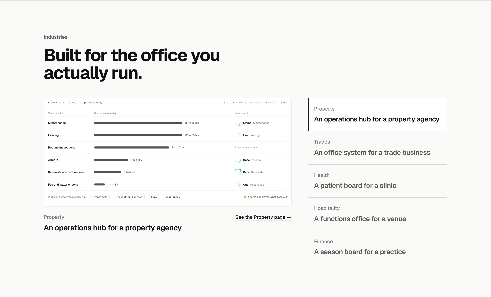
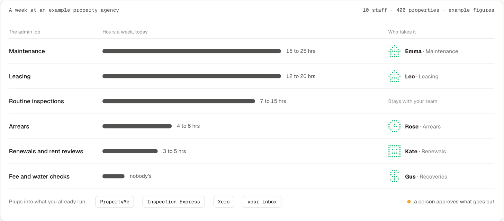
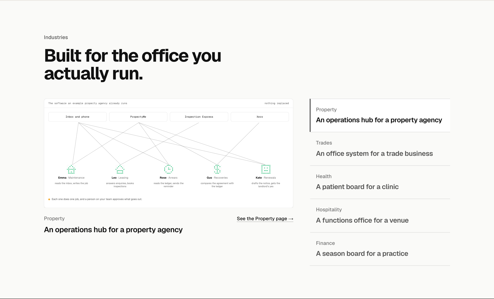
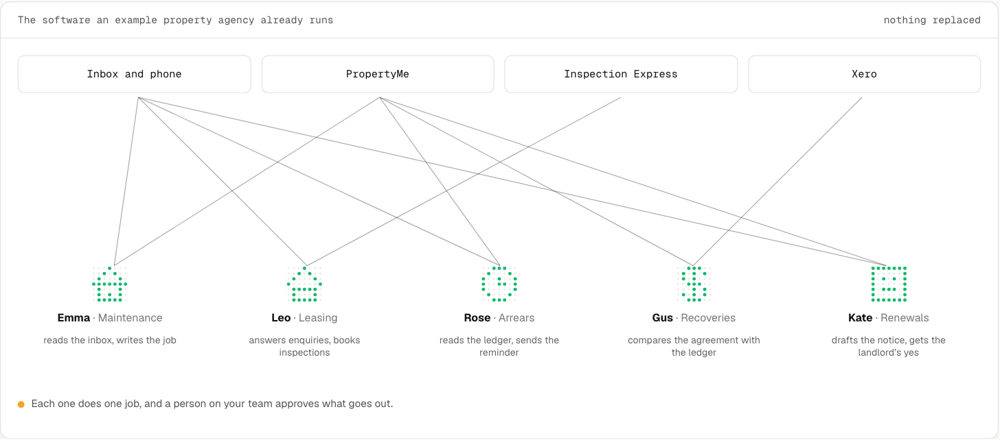
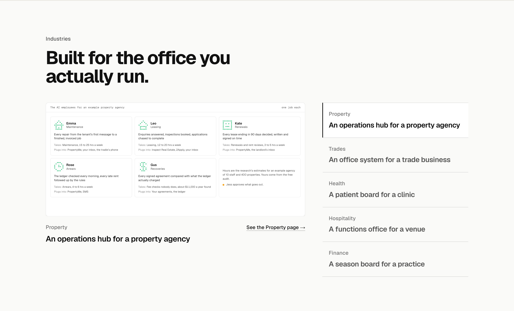
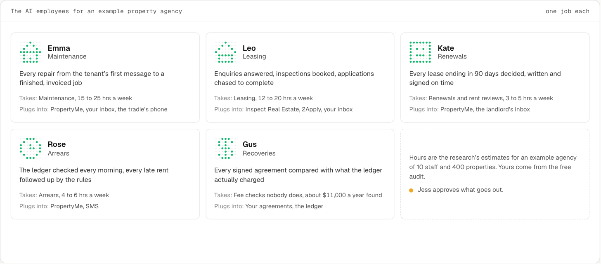

Industries: recognition three ways
The same section in your layout A, but with the recognition job: a visitor sees their own industry’s week, the AI employee that would take each job, and the software it plugs into, then goes to the industry page. Property drawn three ways; the other four follow the pick. Hours are the research’s estimates for an example agency and say so. Each shown in place at 1440, then the screen close up, in its finished state. All three play when they come into view at /lab/industries-recognition. Every name, address and figure is made up.
1. The weekA week at an example agency as a list of the admin jobs with the hours each takes, and as it plays an AI employee attaches to each job it would take, with the software it plugs into named underneath. Reads top to bottom like the owner’s own week. Recommended.


2. Your software, with the employees in itThe systems the agency already runs (inbox and phone, PropertyMe, Inspection Express, Xero) as a row, and the AI employees appearing between them with lines to what each reads and writes. Recognition by tool names; shows nothing is replaced.


3. The teamThe industry’s AI employees as a team sheet: avatar, name and job, one line of what it does, the job it takes and the hours that job runs to at an example agency, what it plugs into. The most like a staff page.

